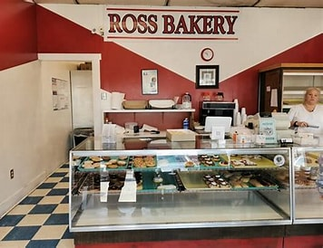

Welcome to Ross Bakery
This section introduces visitors to the bakery and café, highlighting the welcoming atmosphere and the tradition of serving freshly baked goods to the local Ross, Ohio community.

This section introduces visitors to the bakery and café, highlighting the welcoming atmosphere and the tradition of serving freshly baked goods to the local Ross, Ohio community.
